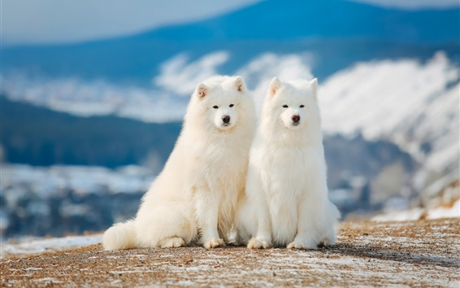

薩摩耶犬

特徵
直立的耳朵很厚，呈三角形，尖端略圓。兩耳分的較開。眼睛顏色深為佳，兩眼凹陷，間距大，杏仁形，下眼瞼向耳基部傾斜。鼻子顏色有黑色、棕色、肝褐色，鼻的顏色有時隨年齡和氣候改變。嘴唇多數是黑色，嘴角上翹。牙齒強壯，剪狀咬合。背部直，中等長度，肌肉豐滿。腳大而長，比較平，似野兔的足，趾稍分開；趾尖呈拱形肉墊厚而硬，趾之間有保護的毛，腳圓形或似貓足。尾巴比較長，自然下垂時可達跗關節部，尾部被毛長而厚，當犬處於戒備狀態時，尾上翹高於背部或位於背部一側，休息時下垂
性格
聰明，溫和，忠誠，適應性強，機警，充滿活力，樂於服務，友好而富有激情，勇敢而樂於嘗試，真誠而不會去懷疑，進攻性不強。
歷史
薩摩耶犬（英語：Samoyed）是狐狸狗、雪橇犬家族的一員，原是俄國西伯利亞原住民薩摩耶族培育出的犬種。因看起來永遠在笑的樣子又喜歡親近人，而被稱為「笑臉天使」。
飼養注意事項
把薩摩耶犬當做人的夥伴和朋友，才能耐心地飼養、護理和調教它。不能對它喜怒無常，忽冷忽熱。薩摩耶犬不具備人的智力，不能進行邏輯思維、不懂人的語言，薩摩耶犬隻能通過記憶來進行學習。因此，在訓練時也要有耐心，要反覆重複一個口令或一個手勢，以逐步幫助其建立起某種行為習慣，不能操之過急，要求太高。